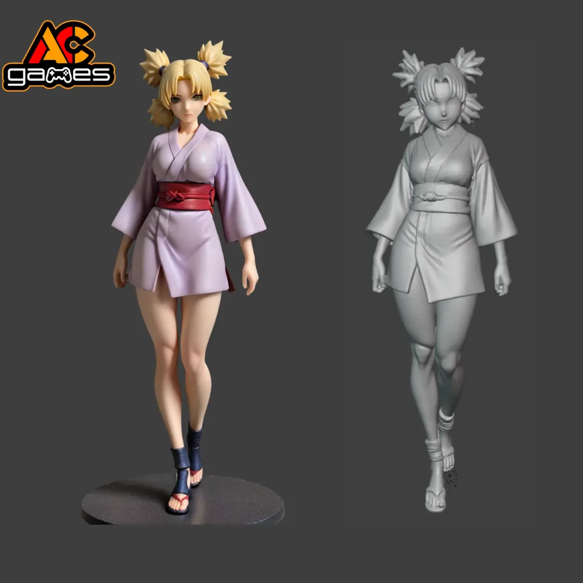

Detailně zpracovaný 3D model inspirovaný světem Naruto.

Autor modelu: Acgames
Zdroj: Printables
Licence: Creative Commons Attribution 4.0 International (CC BY 4.0)
Tento model Temari z Naruta zachycuje její ikonický vzhled a pózu, s detailním oblečením a doplňky.